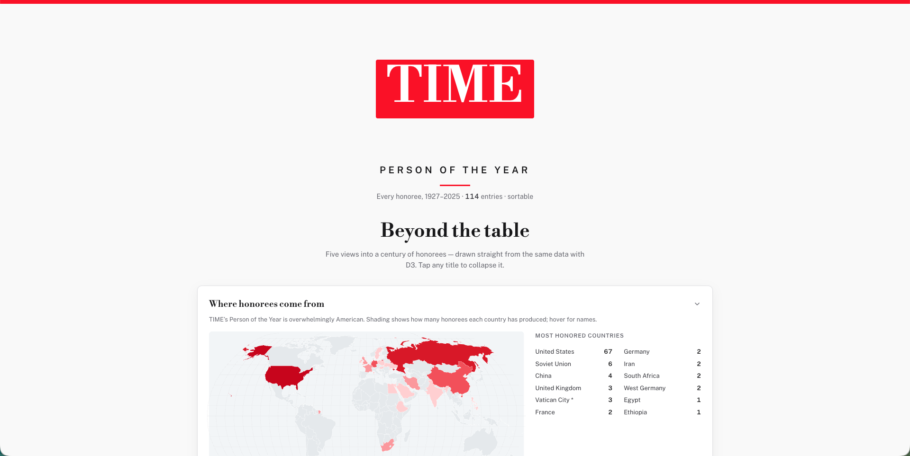

About
I'm a customer engineer and technical educator with 8+ years of experience helping enterprise engineering teams adopt developer platforms across mapping, identity, and cloud.
I build working demos and open-source tooling, teach engineers through workshops and conference talks, and use Claude Code on both personal and work projects.
My foundation is in cartography (M.S., UW–Madison) and identity and access management (Okta), which still shapes how I think about cloud and AI security.
Projects
-

TIME Person of the Year
A React and D3 app, built with Claude Code, for exploring every TIME Person of the Year honoree from 1927 to 2025. It pairs a sortable table with five interactive charts: a world map by country, a streamgraph of categories over time, a timeline of the honor's wording, an age-at-honor beeswarm, and repeat honorees.
-
Google Maps Platform Postman collection
An open-source collection I lead. It won Postman's 2025 Top New API award, with 95K+ views and 1.1K+ forks.
-
Rapid Deploy
Formerly Quick Launch: an open-source drag-and-drop dashboard for situational-awareness apps that need little to no code, published at Mapbox.
-
Hootenanny UI
Front-end development (2016–2017) on the open-source web interface for Hootenanny, a vector map-data conflation tool built on the OpenStreetMap iD editor.
Teaching & Speaking
- Speaker on API adoption strategy at Postman's API GTM conference and SF Tech Week (2025)
- Led 10+ hands-on technical workshops for enterprise engineering teams
- Co-founder and mentor, PreSales Collective DC chapter (2021–2024)
- Graduate teaching assistant for Introduction to Cartography at UW–Madison; Olmstead Departmental Award for Outstanding Teaching Assistant
Experience
- Senior Customer Engineer, Google
- Lead Enterprise Solutions Engineer, Okta
- Enterprise & Government Solutions Engineer, Mapbox
- UX Engineer, Esri
- UI/UX Developer, DigitalGlobe
- Cartographer, University of Wisconsin–Madison
Education
- M.S., Cartography and GIS, University of Wisconsin–Madison Read my thesis (PDF)
- B.A., Geography, University of South Carolina
Awards
- Olmstead Departmental Award for Outstanding Teaching AssistantUW–Madison Department of Geography
- Trewartha Graduate Research AwardUniversity of Wisconsin–Madison
- Donald O. Bushman Cartographic AwardUniversity of South Carolina Department of Geography
- Magna Cum LaudeUniversity of South Carolina
- Eagle ScoutBoy Scouts of America